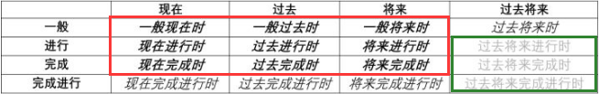
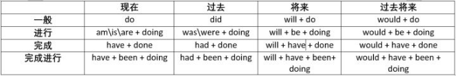

初识动词的时态
说起学习英语中的时态，有些人会觉得比较困难。为了降低学习难度，先把【动词的时态】分成两部分 -- 【动作发生的时间 + 动作进行的状态】。
下面，先用中文的思维来阐述时间与状态的概念，然后在套用到英语的学习上来。记住，中国人与外国人在语法上的表达顺序虽然不同，但逻辑思维是相同的。
动作发生的时间
从动作发生的时间看，在说话或表达时，可以总结为4种情况：“以前我做过什么”、“现在（最近）我在做什么”、“将来我准备做什么”、“当时我本来是打算做什么”。
上面4个情况分别对应了时态中的 - “过去”、“现在”、“将来”、“过去将来”。
动作进行的状态
从动作进行的状态看，在说话或表达时，也可以总结为4种情况：“一贯的作法（状态）”、“动作正在进行中”、“动作已经完成，事情了结”、“当前动作已经完成，但事情还要继续”。
上面4个情况分别对应了了时态中的 - “一般”、“进行”、“完成”、“完成进行”。
再说动词的时态
本篇的重点【时态】其实就是动词【时间 + 状态】的组合。上述4种时间与4种状态可以任意两两组合形成一种时态。也就是说英文中共有16种时态。如下图：

上图中，红框部分的时态是日常使用频率最高的，绿框是基本不使用的，剩下的用得也相对较少。大家可以根据自己的精力来把握要掌握的程度。
学习时态时，有两个重点，第一，不同时态的应用场景；第二，谓语动词根据时态的变化方式，如下图：

一般现在时
应用场景：
- 1. 表示经常发生或习惯性动作；
- 2. 表示一般性状态，主语的爱好或职业等；
- 3. 表示普遍存在的真理与客观事实、格言、谚语、警句等；
- 4. 戏剧、电影、新闻中的说明性文字；
- 5. 传达过去不确定时间发出的信息。仅限tell,say,learn,hear,write等几个动词。
语法构成：
- 肯定式：主语 + 动词原形（第三人称动词原形要 + s/es）；
- 否定式：主语 + do/does not + 动词原形；
- 疑问式：Do/Does + 主语 + 动词原形；
- 疑问否定式：Do/Does + 主语 + not + 动词原形；
He
lives in a small town.
他住在一个小镇上。Tom
likes swimming.
汤母喜欢游泳。I
hear you're moving.
我听说你要搬家了（传达过去不确定时间发出的信息）。
一般过去时
应用场景：
- 1. 表示过去某个时间发生的动作或存在的状态；
- 2. 表示过去经常或反复发生的动作；
语法构成：
- 肯定式：主语 + 动词过去式；
- 否定式：主语 + did not + 动词原形；
- 疑问式：Did + 主语 + 动词原形；
- 疑问否定式：Did + 主语 + not + 动词原形；
I
was a doctor.
我以前当过医生。We often
played together when we
were children.
我们小时候经常一起玩。
一般将来式
应用场景：
- 1. 表示将来发生的动作或存在的状态；
- 2. 表示一种倾向或固有性会发生的动作；
语法构成：
- 肯定式：主语 + shall/will + 动词原形；
- 否定式：主语 + shall/will not + 动词原形；
- 疑问式：Shall/Will + 主语 + 动词原形；
- 疑问否定式：Shall/Will + 主语 + not + 动词原形；
I
will see a film tonight.
今天晚上我要看电影。Will I see you again next yea?
明年还能见到你吗？
A chair
will not stand on two legs.
两条腿的椅子是立不起的。
现在进行时
应用场景：
- 1. 表示此时此刻正在进行或发生的动作；
- 2. 表示现阶段进正进行（说话时不一定在进行）的动作；
- 3. 表示一种渐变的过程；
- 4. 表示知觉与情感等动词不能用于现在进行时，如：see,hear,smell,taste,notice,feel,find,forget,know,like,love,think,understand,want,wish等。个人猜估计是see,hear等词是一种长期的能力或状态，用一般现在式表达准确。
语法构成：
- 肯定式：主语 + am/is/are 动词现在分词；
- 否定式：主语 + am/is/are not + 动词现在分词；
- 疑问式：Am/Is/Are + 主语 + 动词现在分词；
- 疑问否定式：Am/Is/Are + 主语 + not + 动词现在分词；
Kate
is learning English.
凯特正在学英语。We
are working on a farm these days.
这些天我们在农场干活。The days
are getting shorter and shorter in winter.
冬季白天变得越来越短了。
过去进行时
应用场景：
- 1. 表示过去某时某刻正在进行或发生的动作；
- 2. 表示有事发生的背景；
语法构成：
- 肯定式：主语 + was/were 动词现在分词；
- 否定式：主语 + was/were not + 动词现在分词；
- 疑问式：Was/Were + 主语 + 动词现在分词；
- 疑问否定式：Was/Were + 主语 + not + 动词现在分词；
I
was watching TV at nine last night.
昨晚9点我在看电视。It
was getting dark.
天渐渐暗下来了。
将来进行时
语法构成：
- 肯定式：主语 + shall/will + be 动词现在分词；
- 否定式：主语 + shall/will not + be + 动词现在分词；
- 疑问式：Shall/Will + 主语 + be + 动词现在分词；
- 疑问否定式：Shall/Will + 主语 + not + be + 动词现在分词；
What
will you be doing this time tomorrow?
明天这个时候你要做什么？He
will be meeting us at the station.
他会在车站接我们的。
现在完成时
应用场景：
- 1. 表示到现在为止已经完成或刚刚完成的动作；
- 2. 表示从过去持续到现在的动作或状态；
- 3. 表示从过去开始到目前为止反复发生的动作或多次出现的状；
语法构成：
- 肯定式：主语 + have/has 动词过去分词；
- 否定式：主语 + have/has not + 动词过去分词；
- 疑问式：Have/Has + 主语 + 动词过去分词；
- 疑问否定式：Have/Has + 主语 + not + 动词过去分词；
Someone
has broken the window.
有人把窗户打破了。He
has been in China since 1989.
自1989起，他就在中国了。
过去完成时
应用场景：
- 1. 表示过去某个时间已经完成的动作；
- 2. 表示从过去持续到过去另一时间的动作或状态；
- 3. 表示从过去未曾实现的希望，打算，意图；
语法构成：
- 肯定式：主语 + had 动词过去分词；
- 否定式：主语 + had not + 动词过去分词；
- 疑问式：Had + 主语 + 动词过去分词；
- 疑问否定式：Had + 主语 + not + 动词过去分词；
I
had finished my homework before supper.
我在晚饭前把作业完成了。I
had hoped to write something, but there was no time.
我本想写点什么，只是没时间。
一般过去将来时
应用场景：
- 1. 表示从过去某时间来看将来要发生的动作或存在的状态，常用于宾语从句；
语法构成：
- 肯定式：主语 + should/would 动词原形；
- 否定式：主语 + should/would + 动词原形；
- 疑问式：Should/Would + 主语 + 动词原形；
- 疑问否定式：Should/Would + 主语 + not + 动词原形；
I didn't know when he
would go.
我不知道他什么时候走。You knew I
would come.
你知道我会来的。
现在完成进行时
应用场景：
- 1. 表示过去一直持续到现在的动作；
- 2. 表示不久前刚结束的动作；
- 3. 表示到说话时为止的一段时间一再重复的动作；
语法构成：
- 肯定式：主语 + have/has + been 动词现在分词；
- 否定式：主语 + have/has not + been + 动词现在分词；
- 疑问式：Have/Has + 主语 + been + 动词现在分词；
- 疑问否定式：Have/Has + 主语 + not + been + 动词现在分词；
It
has been raining for three days.
已经下了3天的雨了。You look so tired; what
have you been doing?
你看起来很累，都做什么了？You
have been saying that for five years.
这话你都说了5年了。